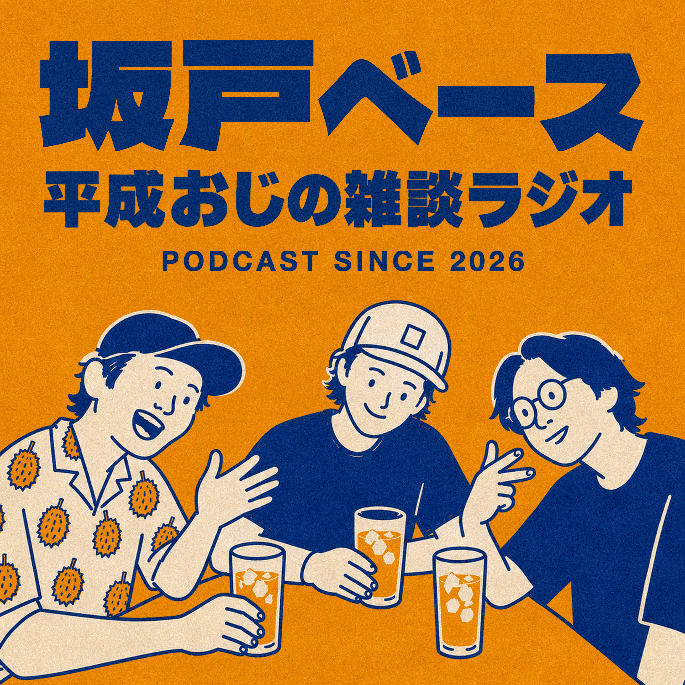

※このページはURLを知っている3人だけの共有用です。拡散はしないでください。
話した内容：自己紹介／健康診断と尿酸値／睡眠サイクル論争／百名山98座／インバウンド／地元の昔の名店
収録したあと、こうなりました
タクマと大場先生へ。8/18にバーミヤンで喋ったあと、いっちゃんが進めていた分の報告です。
-
音を整えて32分にまとめた
店内のガヤは残したまま、声だけ聴きやすくなるよう調整。BGMも入れました。
-
ロゴ（アートワーク）を作った
駅名標をイメージしたオレンジ×紺。このページのいちばん上に出ているのがそれです。
-
Spotifyに番組を開設して第1回を公開した
タイトルは「北坂戸ベース、開局！」。もう誰でも聴ける状態です。
-
Apple・Amazon Music・Pocket Casts・Castbox・LISTENにも配信した
普段使っているアプリで「北坂戸ベース」と検索すれば出てきます。
-
全部の会話を文字に起こして「文庫版」にした
このページの下にあります。章をタップするとその場面から再生できます。
-
第2回の場所と日程を押さえた
9/29（火）17:00・ココス坂戸店。カレンダーに入れておいてください。
ここから2人にお願いしたいこと：下の「のりば」を上から順にタップして、感想と次回のネタを書いてください。最後のボタンでLINEに貼る文ができます。
文庫版
章をタップするとその場面から再生。本文の段落タップでも頭出しできます。
この回のまとめ
埼玉・北坂戸の地元の友達3人（いっちゃん・大場先生・タクマ）がバーミヤン北坂戸で第1回を収録。自己紹介から健康・登山・海外・地元の昔の名店までゆるく雑多に話した。
決めたこと
- 月1回バーミヤンに集まって収録する
- 番組タイトルは後日決定 → 「北坂戸ベース」に確定済み
まず、誰？
押すと最後のコピー文に名前が入ります。
聴いた感想
「◯◯の話もっと聴きたい」だけでも十分。ここが一番ほしい。
第2回の収録 日程確定
カレンダーに入れておいてください。
9月29日（火）
17:00 〜
ココス 坂戸店埼玉県坂戸市片柳2171-1
地図をひらく
書けたらボタンを押して、LINEグループに貼ってください。
入力は自動で保存されるので、途中で閉じても消えません。